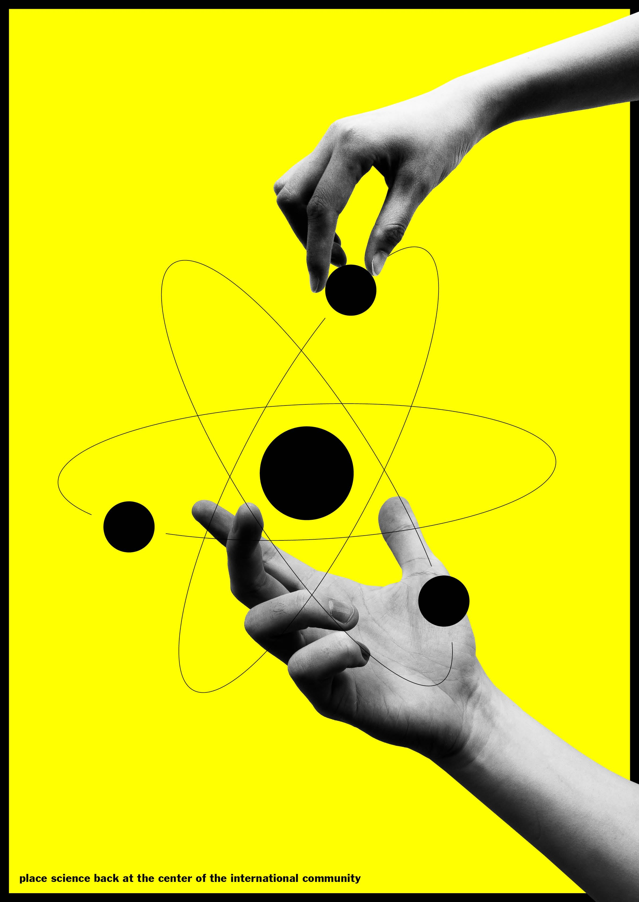

selected works
2023 - 2024
Over the last few years I have worked on different projects besides studying. Here is a selection of them.
EU election campaign for young people, shortlisted
(joint work with Marla Gaiser 2024)

Poster for Summit of the Future
(UdK Klasse Kampagnen 2024)
Poster Design for the Alisa Tretaus Project "Mensch, Fluss"
(joint work with Marla
Gaiser 2024)
Design and Development of the Website
Schifferkirche Ahrenshoop, 2024.